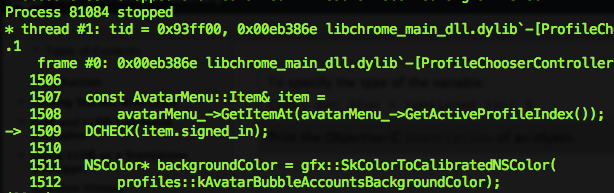
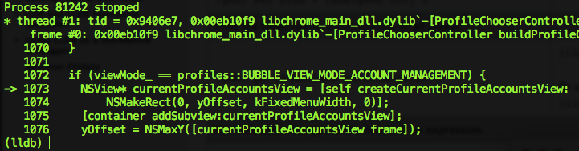

lldb stands for Llama-DB, and is a database of llamas you can use to debug programs
compiled with clang (lldb is to clang like gdb is to gcc). If you already know how to use gdb, then
here’s a translation of the common commands.
Disclaimer: There is a ton of tutorials and pages about all of the
awesome features and commands of lldb, and how to become a debugging pro.
This is not that. This is the smallest set of things you need to read
to answer the question “what’s making this shit crash”. That’s it.
Step 1. Make it go
If you want to pass a bunch of arguments to your executable moose, use
(´ ▽｀).。ｏ♡ src on fix/moose-crash ☀ ❥ lldb -- moose arg1 arg2
Current executable set to 'moose' (x86_64).If you don’t have arguments, lldb foo is enough. This just tells lldb
which executable to care about, but it won’t actually start the process for you.
(lldb) run --> Start or re-start your process
(lldb) exit --> Stop your process.Step 2. Make it crash
Since we (me) are investigating a crash, the first thing you need is a stack trace that
tells you where the crash is. So, start your process in lldb, make it crash, and we’ll take it
from there.
Side bar: I literally typed this blog out while sorting out a crash in the sign-in bits of Chromium, so all my screenshots are Chromium code. Do not panic. Your code can crash just as well if you give it enough time and attention.
Once you hit your crash, lldb tells you something like this.

I can’t tell you how excited I am at that little arrow. It almost looks non-intimidating. Almost.
Step 3. Breakpoints! It’s hammer time
The first thing I did was set a breakpoint at that line to figure out
what’s going on right before things got crashy (because I’m sure you’re dying to
know, my crash was happening because we hit that DCHECK which reads
“the item should always be signed in” and, spoilers, it isn’t)
To set a breakpoint in a file at a specific line:
(lldb) breakpoint set --file profile_chooser_controller.mm --line 1509Awesome discovery: you don’t have to give the full path to the file (which in
Chromium is a nightmare). Also, there’s autocomplete, so profile_<tab> gives you
suggestions and happy feelings.
At this point, I pressed enter a bunch of times (as you do), which ended up
setting that breakpoint 4 times (as it does). So don’t do that. If you ignored that
bit of advice, here’s some helpful breakpoint-related things you can talk to lldb about:
(lldb) breakpoint list --> numbered list of all dem breakpoints
(lldb) breakpoint help --> this is surprisingly not scary!
(lldb) breakpoint delete 4 --> deletes the 4th breakpoint
(lldb) breakpoint delete --> deletes ALL the things. but warns you first.If you don’t like typing, all these commands have super l33t
shortcuts like br s -f moose.c -l 12. This intimidates me seven ways to Sunday,
since I’ve just learnt how to set a breakpoint, and I had to do it on the command
line and I like UIs, but if that’s your jam,
here is that list.
Go forth and conquer.
If you’ve already started your executable and forgot to set a breakpoint, it’s OK!
Just Ctrl+C in lldb to pause your program and clean up your room before
your friends come over. When you’re done, type continue to resume your process. Amazing!
Intermission: Playing with stack traces
Current status: we’ve run our code, we’ve hit the breakpoint. lldb rewards you
with a snippet of code around that point. Dat arrow. ❤︎

More things that you can probably want to do here:
(lldb) thread backtrace --> stack trace of how we got here
(lldb) up --> move up the stack trace to your parent calleeStep 4: Poke at things
Once you’re paused, you can inspect the value of a variable in that scope. You probably want to do that because 90% of the time a thing that shouldn’t be null is null, because C++.
(lldb) frame variable viewMode_To step through things, get in the llama car, close the door, and start navimagating:
(lldb) step --> step into the call at this line. Alias for 'thread step-inst'
(lldb) next --> skip to the next line. Alias for 'thread step-in'
(lldb) finish --> step out of this call. Terrible alias for 'thread step-out'If at any point you want to restart your process, just type run again. Don’t worry,
it’s not destructive – you’ll be asked to confirm if you really want to blow
away the frame you’re in. Bam!
That’s it!
For realsies! You and lldb should probably get friendship bracelets now.
∩∩ （ﾟωﾟ） .。ｏ♡ │ │ │ └─┐○ ヽ 丿 ∥￣∥